地政学
ルクソールは上エジプトのナイル回廊にあり、カイロ、アスワン、紅海方面を結ぶ観光と行政の節点です。古代テーベの記憶が国家の文化外交を支え、遺産保護と地域開発が同じ土地で調整され続けています。治安も要です。

🇪🇬 エジプト / アフリカ / World City Atlas
古代テーベの神殿群とナイル西岸の墓地、現代の観光労働、農村、船着き場、乾いた住宅地が重なる上エジプトの遺産都市です。
都市の骨格
ルクソールは巨大首都ではありませんが、世界遺産級の記憶、観光経済、上エジプトの生活が近距離で交差します。神殿の壮大さだけでなく、船、畑、宿、家族の暮らしが都市を読ませます。
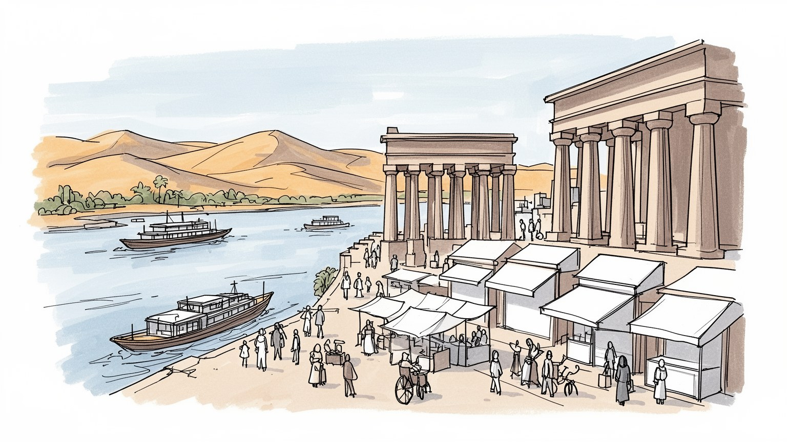
ルクソールは上エジプトのナイル回廊にあり、カイロ、アスワン、紅海方面を結ぶ観光と行政の節点です。古代テーベの記憶が国家の文化外交を支え、遺産保護と地域開発が同じ土地で調整され続けています。治安も要です。
宿泊、ガイド、船、馬車、土産物、発掘、修復、農業、建設が暮らしを支えます。観光客の増減は家計に直結し、季節雇用、チップ、価格交渉、若者の仕事探しが都市経済の現実をつくります。安定収入も大きな課題です。
古代神殿は博物館の展示物ではなく、現代のイスラム、コプトの暦、聖者信仰、家族行事と同じ街に立っています。巡礼、祭り、結婚、葬送、観光の視線が重なり、記憶は日常の所作へ溶けます。祈りも日々続きます。
早朝の気球、神殿見学、ナイル遊覧の背後には、暑さ、水、家賃、学校、畑仕事、交通、医療があります。観光都市としての顔と、上エジプトの家族生活が近く、旅の風景は生活条件と切り離せません。日々の買い物も要です。
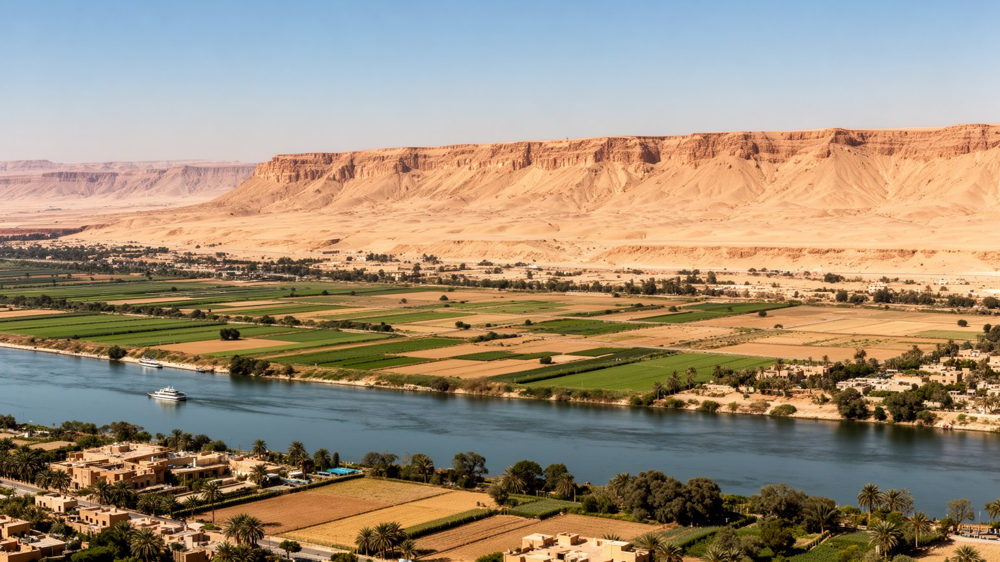
ルクソールの都市構造は、ナイル川、細い農地、すぐ背後に迫る砂漠を一緒に見ると分かりやすいです。東岸には駅、行政、宿泊施設、市場、ルクソール神殿とカルナック神殿が並び、西岸には畑、村、墓地群、船着き場、山並みが広がります。橋と渡し船は単なる移動手段ではなく、観光客、農民、学生、ガイド、修復作業員の一日をつなぐ生活の軸です。川沿いの緑は豊かに見えますが、耕作地は限られ、住宅や観光施設の拡大と競合します。水路、堤、道路、フェリー乗り場の位置は、畑への通いや学校、病院、神殿見学の時間を決めます。ルクソールは広大な大都市ではありませんが、川の両岸に古代、農業、観光、行政、家族生活が圧縮された都市です。朝の霧が川面に残る時間には、観光船と小さな農作業の移動が同時に始まります。夕方には東岸の店が明るくなり、西岸の畑から家へ戻る人が増えます。地理の読み方を変えると、遺跡は孤立した名所ではなく、川、畑、村、道路の網の中に置かれた生活の一部に見えます。さらにこの細い生活圏では、道路を一本広げることも、農地を削り、古い墓地や集落の動線を変える判断になります。砂漠側へ開発が進めば土地は得られるが、水、電力、通学、通勤の負担が増えます。ルクソールの地図は、空白の砂漠に自由に都市を広げる図ではなく、川の水に寄り添って暮らしを配分する図です。
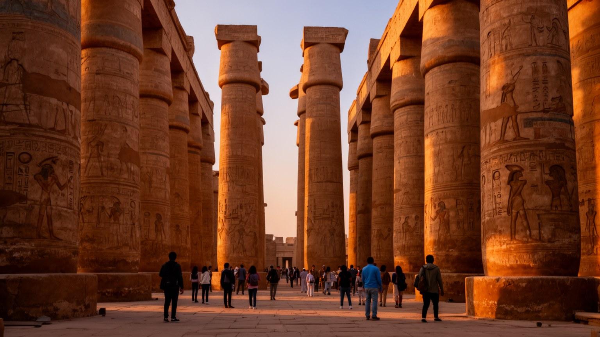
ルクソール神殿とカルナック神殿は、都市の外に保存された遺跡ではなく、現代の街路と住民の生活に接して立つ巨大な記憶です。参道、柱列、聖池、彫刻、オベリスクは古代王権とアメン信仰の力を示し、夜の照明や観光動線はそれを現代の経済へ変えます。保存と公開は簡単ではありません。石材の劣化、地下水、砂ぼこり、観光客の集中、周辺道路、露店、住民移転の問題が重なります。神殿を美しく見せる整備は都市の誇りを高める一方、周辺で暮らした人の移動や商いの変化を伴うことがあります。遺産は国家の文化外交にも使われ、エジプトの歴史的深さを世界へ示します。ですが神殿の価値は壮大な写真だけにありません。ガイドが物語を組み立て、清掃員が朝の場を整え、考古学者と修復職人が細部を守り、地域の店が旅人を受け止めます。その複数の仕事があって初めて、古代テーベは現在の都市として読めます。参道の復元や照明整備は観光の体験を変えるだけでなく、市民が自分の街をどう歩くかも変えます。祭礼の記憶、王権の宣伝、植民地期の発掘、現代国家の保存政策が同じ石の上に重なり、神殿は過去の建造物でありながら現在の都市政策の中心にもなります。観光客が柱の大きさに圧倒される瞬間の近くで、地元の子どもは通学し、店主は開店準備をし、行政は混雑と治安を調整します。神殿は都市を外へ売り出す看板であり、同時に住民が毎日横を通る隣人でもあります。
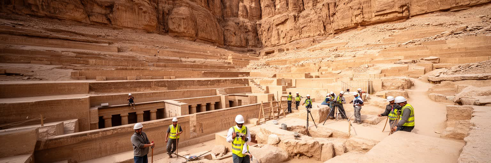
ナイル西岸は、王家の谷、王妃の谷、貴族の墓、葬祭殿、メムノンの巨像が並ぶ死者の地として知られます。しかし現地の景観は、静かな考古学の舞台だけではありません。山裾の村、畑、ロバや小型トラック、土産物店、修復現場、検問、駐車場、気球の離陸地があり、生活と観光が同じ道を使います。墓の壁画を守るためには温湿度、人数制限、照明、撮影、粉じんを管理しなければなりません。かつて墓地近くで暮らした住民の移転は、保存の必要と生活の権利が衝突する問題でもありました。西岸を歩くと、古代人の来世観と現代人の収入、土地、住まいが隣り合います。朝の気球から見る畑と砂漠の境界は美しいが、その下には灌漑、所有、雇用、学校への通学があります。王家の墓は世界の記憶を集める場所であると同時に、地元の家庭が毎日の仕事を得る場所でもあります。この二重性を見ないと、西岸は絵葉書の背景になってしまいます。観光バスが通る舗装道路の外側には、家族の畑、修理中の家、学校帰りの子ども、茶を飲む店が続きます。発掘の成果は世界のニュースになりますが、その現場を支えるのは地元の知識、身体労働、暑さに慣れた時間感覚でもあります。西岸の記憶は王だけのものではなく、墓を守りながら暮らす人の記憶でもあります。山の乾いた色と畑の緑が隣り合う景観は、死者の記念碑と生者の生計が同じ場所でせめぎ合うことを静かに示しています。
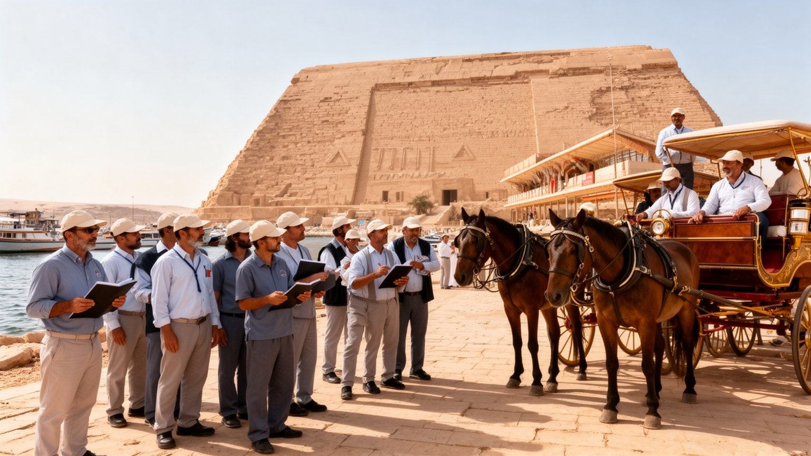
ルクソールの経済は観光に深く依存します。ホテル、クルーズ船、ガイド、馬車、タクシー、気球、土産物店、レストラン、警備、清掃、発掘補助、修復、農産物の供給が、旅人の一日を支えます。観光は外貨と雇用を生むが、政治不安、感染症、航空便、為替、国際報道の影響を受けやすく、収入は大きく揺れます。チップや価格交渉に頼る仕事では、繁忙期と閑散期の差が家計を直撃します。外国語を学ぶ若者には機会がある一方、安定した契約や社会保障に届かない人も多いです。観光地の客引きは旅行者に強く見えることがありますが、その背後には競争の激しさと生活の不安があります。遺産を訪れる体験は、見学料を払うだけで完結しません。誰が案内し、誰が安全を守り、誰が船を動かし、誰が石を修復し、誰が食事を用意するのかを見れば、観光は地域社会の労働の束として見えてきます。ルクソールの持続性は、遺跡の保存だけでなく、働く人が尊厳を保って暮らせる仕組みにかかっています。観光客の満足だけを追うと、値下げ競争や過度な声かけが強まり、働く側も訪れる側も疲れてしまいます。料金の透明性、技能教育、語学、保険、休める季節の収入源が整えば、遺産をめぐる仕事はより安定します。観光労働を都市の中心課題として見ることが必要です。収入が読めない家庭ほど、子どもの教育や医療の支払いを先送りしやすいです。観光の回復は、地域の安心を回復することでもあります。
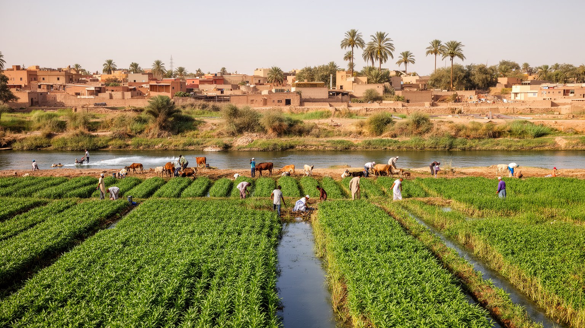
ルクソールを神殿都市としてだけ見ると、農業と村の存在を見落とします。ナイル沿いの畑ではサトウキビ、野菜、穀物、飼料作物が育ち、家畜、用水路、日陰の少ない道、家族経営の労働が日常をつきます。観光客が朝の神殿へ向かう時間に、農家は水の順番、収穫、運搬、家畜の世話を進めています。農業収入は天候、肥料価格、水、土地の細分化、仲買、観光関連の副業と結びつきます。子どもの教育費や医療費をまかなうため、家族の誰かがホテルや土産物店で働き、別の誰かが畑を守ることも多いです。都市の周辺で農地が住宅や道路に変わると、食料と仕事の基盤も変わります。ルクソールの生活は、遺産観光と農村経済が分離せず、同じ家庭の中で組み合わさる点に特徴があります。市場に並ぶ野菜やパン、クルーズ船の食材、家庭の昼食は、川沿いの小さな土地と労働に支えられます。農地は観光写真の緑の帯ではなく、都市が暑さと不安定な観光収入の中で暮らしを保つための現実的な基盤です。農村の暮らしには助け合いの強さがある一方、若者が都市的な仕事を望み、農地を離れる動きもあります。女性の家事、収穫期の手伝い、親族間の貸し借りは見えにくい経済であり、観光統計だけでは測れません。ルクソールの足元を読むには、畑の時間を都市の時間として扱う必要があります。農業の安定は、観光の波が荒い時期に家庭を支える保険にもなります。川の水と土地の配分は、暮らしの安心そのものに直結します。
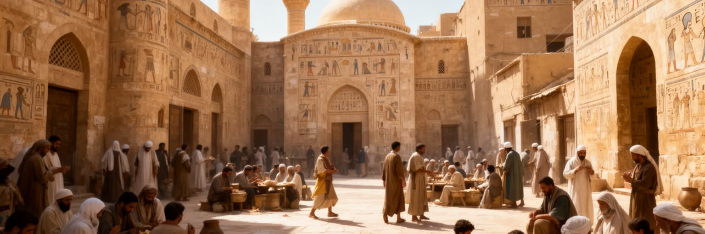
ルクソールでは、古代エジプトの神殿が強い存在感を持つ一方、現代の宗教生活はイスラムの礼拝、ラマダン、聖者信仰、コプト教会の暦、家族の祝い事として続きます。神殿の壁に刻まれた祭礼は過去の信仰を伝えるが、現在の街でも祈りの呼びかけ、断食明けの食事、結婚式の音楽、葬送の列、聖人祭の集まりが時間を刻みます。観光客は古代宗教を学びに来るが、住民にとって宗教は日々の倫理、親族関係、商売、助け合いにも関わります。多くの人は古代神を信仰しているわけではありませんが、その遺産を生活と誇りの一部として扱います。ここにルクソール独特の重なりがあります。過去の宗教は石に残り、現在の宗教は声、食事、衣服、休日、近所づきあいに現れます。宗教を観光の題材だけにすると、都市の生きた時間を見落とします。神殿の壮麗さと現代の祈りを同じ街で読むことで、ルクソールは死んだ古代都市ではなく、記憶を抱えた生活都市として立ち上がります。宗教施設は災害や困窮時の相談先にもなり、結婚費用や葬儀の手配では親族と地域の関係が強く働きます。祭りの日には交通や商いの流れが変わり、祈りは個人の内面だけでなく都市の暦として現れます。古代と現代の儀礼を重ねて読むことが、この街の厚みを生みます。観光パンフレットでは別々に語られる神話と礼拝も、住民の暮らしでは同じ道、同じ市場、同じ家族の予定に接しています。宗教の層を読むほど、ルクソールの時間は立体的になります。
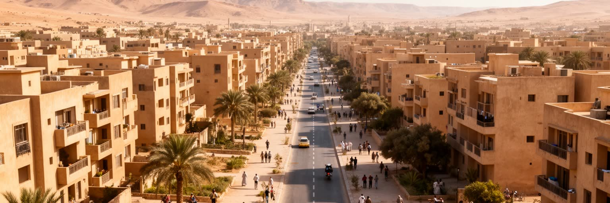
ルクソールの住宅地は、遺産保護、農地、観光開発、家族の拡大の間で成長してきました。東岸の中心部にはホテル、商店、行政、集合住宅が集まり、周辺には未完成の階を残す住宅や細い路地が続きます。西岸では村と農地、墓地保護区域、観光道路が近接し、土地利用の調整が難しいです。家族は結婚する子どものために上階を足し、収入に合わせて少しずつ住まいを完成させることがあります。これは貧しさの印だけでなく、将来を家族単位で確保する方法でもあります。一方で、遺跡近くの移転や開発規制は、保存の必要と住民の権利をめぐる緊張を生みます。観光客が見やすい景観を整えることと、地元の人が学校、病院、仕事へ通いやすい住宅を得ることは、常に一致するとは限りません。暑さの厳しい土地では、日陰、風通し、水、屋上、路地の使い方が生活の質を左右します。ルクソールの都市成長を読むには、神殿の周囲を空白として眺めるだけでなく、その近くに住み、働き、移動する人の権利と負担を見る必要があります。家賃や土地価格が観光開発で上がれば、中心に近い生活は難しくなります。逆に規制が強すぎれば、家の修繕や小商いが進みません。住宅政策は保存政策と別の話ではなく、遺産都市が住民を残せるかを決める土台です。学校や診療所へ歩ける距離も重要になります。住宅の質は、観光客には見えにくい都市の健康診断でもあります。水回り、日陰、通風、道路幅が、暑い街での毎日を大きく左右します。
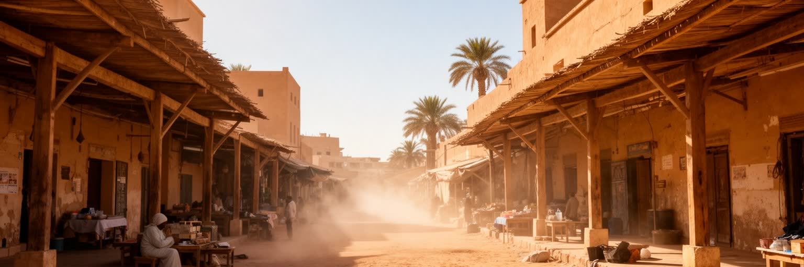
ルクソールの気候は乾燥し、夏は強烈な暑さに包まれます。日中の屋外作業、遺跡見学、農作業、馬車、警備、清掃、建設は、太陽と水分補給の管理なしには続けられません。観光の時間割も気候に合わせて早朝や夕方へ寄り、昼の街路は日陰を求める動きに変わります。冬は比較的過ごしやすく、観光の繁忙期になりますが、朝晩の冷え込みや砂ぼこりもあります。乾燥は石造遺跡を守る面がある一方、風、粉じん、地下水、塩分は保存の課題になります。気候変動で暑さが強まれば、屋外労働者、高齢者、子ども、観光客の健康リスクは増します。水と電力の需要も上がり、エアコンを使える家庭と使えない家庭の差が生活の差になります。ナイルの水は涼しさと緑をもたらすが、それだけで暑さを解決するわけではありません。街路樹、公共の日陰、休憩できる場所、断熱された住まい、適切な労働時間が都市の福祉になります。ルクソールの美しい光は観光資源であると同時に、働く人の体力を奪う現実でもあります。気候を読むことは、遺産の見え方だけでなく生活の安全を読むことです。暑さは交通の選択にも影響し、歩ける距離を短くし、日陰のない広場を使いにくくします。学校の登下校、屋外市場、発掘現場、観光待機の時間は、気温に合わせて調整されます。都市の設計が暑さへ応答できるかは、暮らしの公平さにも関わります。観光の質にも響いています。
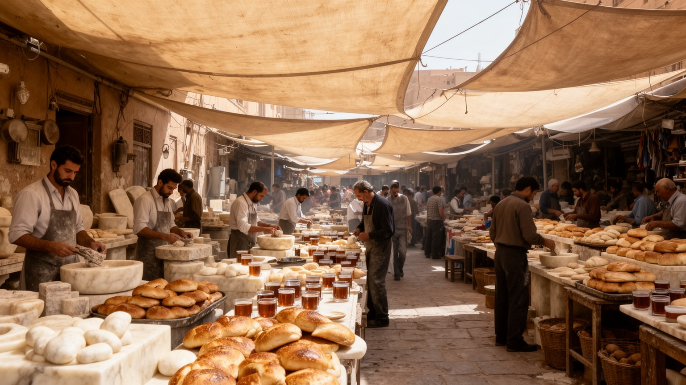
ルクソールの手工芸と食は、観光客の記念品である前に地域の生活と労働の表現です。アラバスターの工房、織物、香辛料、木工、絵葉書、土産物店では、古代モチーフが現代の商売へ翻訳されます。品質の高い職人仕事もあれば、短時間の観光に合わせた大量生産品もあり、価格交渉は店主と旅行者の距離を映します。食卓ではパン、豆料理、野菜、米、肉、甘い茶、ナイル沿いの食堂が日常を支えます。観光レストランの料理は見えやすいが、家庭の食事、市場の買い物、畑から届く野菜、安い軽食こそ住民の体を動かします。手工芸も食も、原材料価格、観光客数、輸送費、家賃、家族労働に左右されます。女性の家内労働や若者の店番は統計に出にくいが、地域経済を支える重要な時間です。文化を買う側の視線だけでなく、作り、売り、食べ、交渉する側の時間を見れば、ルクソールの豊かさはより具体的になります。小さな工房と食堂は、遺跡の壮大さを人の手触りへ戻す場所でもあります。土産物の一つ一つは、古代への憧れと現代の家計が交差する商品です。観光客が少ない季節には、工房は在庫を抱え、店は家族の貯えで耐えることもあります。手仕事を守るには、単に伝統を称えるだけでなく、材料調達、販路、若い職人の教育、公正な価格が必要になります。食と工芸は、都市の記憶を毎日の収入へ変える技術です。技も残ります。
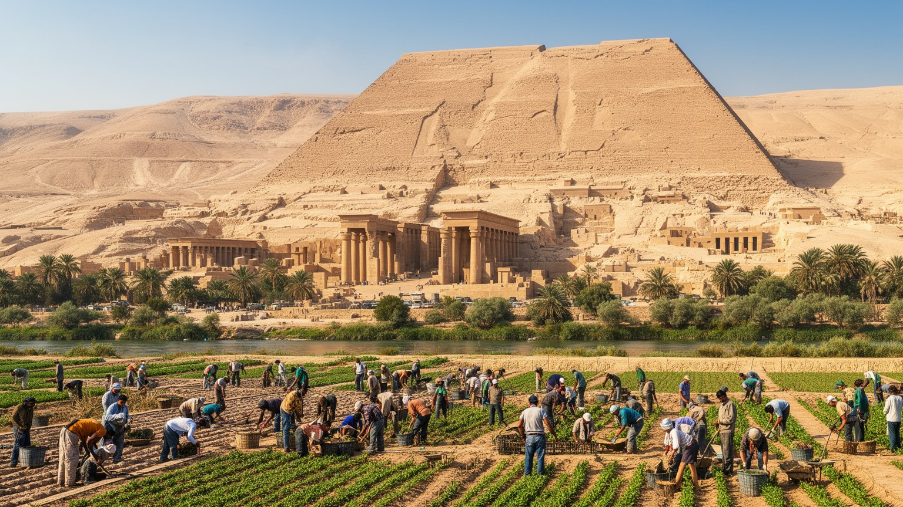
ルクソールを読む難しさは、あまりにも強い古代イメージの下に、現代の生活が隠れやすい点にあります。カルナック神殿、ルクソール神殿、王家の谷、ナイルの夕景は世界的な魅力を持つが、その周囲には学校、病院、住宅、畑、工房、船着き場、役所、市場があります。観光は都市に仕事と誇りを与える一方、収入の不安定さ、客引きへの依存、価格交渉の疲れ、景観整備に伴う移転をもたらすことがあります。農業は見えにくいが、暑さと観光の波から家庭を支える基盤です。宗教は古代神話だけでなく、現代の礼拝、断食、結婚、葬送として街の時間を動かします。ルクソールの価値は、遺跡の数や写真の美しさだけでは測れません。川を渡る人、日陰で休む労働者、畑へ向かう家族、石を守る修復職人、観光客を待つ船頭を同じ地図に置くと、都市は博物館ではなく生きた社会として見えてきます。遺産を守ることと住民が暮らし続けることを両立できるかが、ルクソールの未来を決めます。世界的な名所であるほど、訪れる人は短い時間で強い印象を持ち帰ります。しかし都市の本当の輪郭は、朝のパン、学校への道、畑の水番、夕方の店番、夜の家族の会話にあります。ルクソールは古代を保存する場所であると同時に、現在をどう生きるかを問い続ける都市です。だからこの街を理解するには、遺跡の前で足を止めるだけでなく、川を渡り、市場で待ち、暑さの中で働く人の時間に目を向ける必要があります。